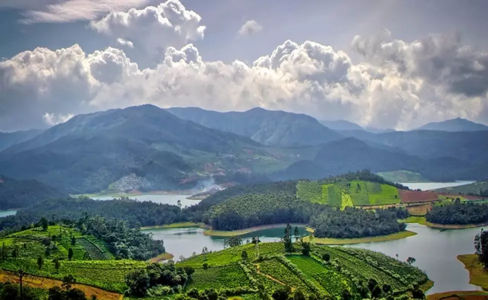
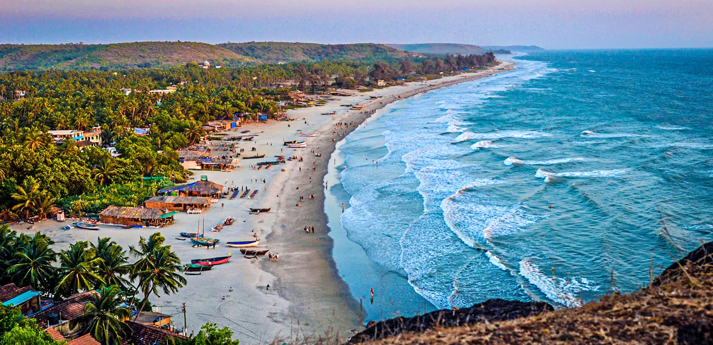

Ooty
Ooty, also known as Udhagamandalam, is a hill station in the state of Tamil Nadu,
in southern India. Surrounded by trees, central Ooty Lake is a huge artificial expanse of water with
pleasure boats. On the slopes of nearby Elk Hill, the Rose Garden is home to over 2,000 varieties
of roses. The Government Botanical Garden, created in the 19th century, features ferns, orchids
and a prehistoric, fossilized tree.
- Elevation: 2,240 m
- Avg. annual temperature: 14.4 °C (58 °F)
- Weather: 17 °C, Wind NE at 8 km/h, 58% Humidity
- Climate: Subtropical Highland (Köppen)
- District: The Nilgiris
- Tourism:
- Gardens and parks
- Lakes and dams
- Reserve forests
- Tribal huts and museum
- Nilgiri Mountain Railway
- Historical buildings
|  |
We are offering the best available price just for you:
- For 2 Nights and 3 Days:
Rs.5700Rs.4700! - For 3 Nights and 4 Days:
Rs.6500Rs.5500!
Goa
Goa is a state in western India with coastlines stretching along the Arabian Sea.
Its long history as a Portuguese colony prior to 1961 is evident in its preserved 17th-century
churches and the area’s tropical spice plantations. Goa is also known for its beaches, ranging
from popular stretches at Baga and Palolem to those in laid-back fishing villages such as Agonda.
- Chief minister: Manohar Parrikar
- Population: 18.2 lakhs (2012)
- Tourism:
- Historic sites and neighbourhoods
- Museums and science centre
- Portuguese territory
- Dance and music on Beaches
- Theatre-Traditional Performance Arts
- Konkani cinema
- Goan cuisine
|  |
We are offering the best available price just for you:
- For 2 Nights and 3 Days:
Rs.7700Rs.6700! - For 3 Nights and 4 Days:
Rs.8500Rs.7500!
Agra
Agra is a city in northern India’s Uttar Pradesh state.
It's home to the iconic Taj Mahal, a mausoleum built for the Mughal ruler Shah Jahan’s wife,
Mumtaz Mahal (who died in childbirth in 1631). The imposing main building features a massive dome
and intricately carved white marble inlaid with precious stones. This is set behind a reflecting pool
inside a courtyard defined by 4 minarets.
- Area: 87 km²
- Weather: 22 °C, Wind E at 8 km/h, 57% Humidity
- Population: 15.9 lakhs (2011)
- Founder: Sikandar Lodi
- Tourism:
- Taj Mahal
- Agra Fort
- Fatehpur Sikri
- I'timād-Ud-Daulah
- Akbar's Tomb, Sikandra
- Jamā Masjid
- Mariam's Tomb
- Mughal Heritage Walk
We are offering the best available price just for you:
- For 2 Nights and 3 Days:
Rs.5000Rs.4000! - For 3 Nights and 4 Days:
Rs.6100Rs.5100!